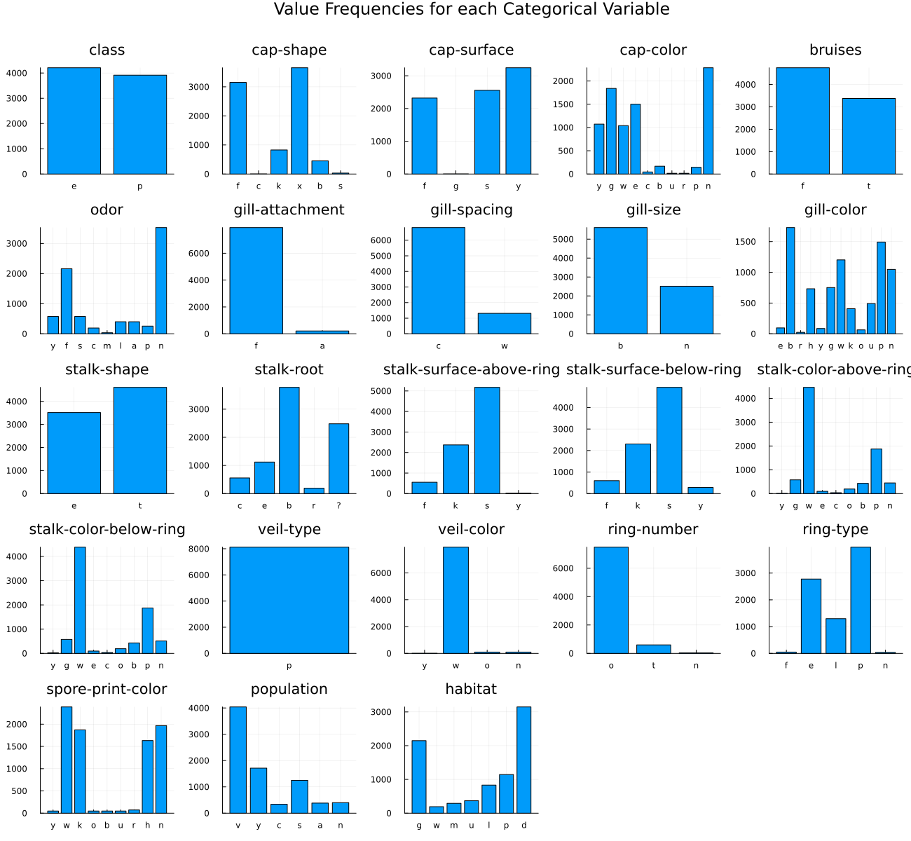

using Random
using CSV
using DataFrames
using MLJ
using Imbalance
using ScientificTypes
using PlotsLoading Data
In this example, we will consider the Mushroom dataset found on Kaggle for the objective of predicting mushroom odour given various features about the mushroom.
CSV gives us the ability to easily read the dataset after it's downloaded as follows
df = CSV.read("datasets/mushrooms.csv", DataFrame)
# Display the first 5 rows with DataFrames
first(df, 5) |> pretty┌─────────┬───────────┬─────────────┬───────────┬─────────┬─────────┬─────────────────┬──────────────┬───────────┬────────────┬─────────────┬────────────┬──────────────────────────┬──────────────────────────┬────────────────────────┬────────────────────────┬───────────┬────────────┬─────────────┬───────────┬───────────────────┬────────────┬─────────┐
│ class │ cap-shape │ cap-surface │ cap-color │ bruises │ odor │ gill-attachment │ gill-spacing │ gill-size │ gill-color │ stalk-shape │ stalk-root │ stalk-surface-above-ring │ stalk-surface-below-ring │ stalk-color-above-ring │ stalk-color-below-ring │ veil-type │ veil-color │ ring-number │ ring-type │ spore-print-color │ population │ habitat │
│ String1 │ String1 │ String1 │ String1 │ String1 │ String1 │ String1 │ String1 │ String1 │ String1 │ String1 │ String1 │ String1 │ String1 │ String1 │ String1 │ String1 │ String1 │ String1 │ String1 │ String1 │ String1 │ String1 │
│ Textual │ Textual │ Textual │ Textual │ Textual │ Textual │ Textual │ Textual │ Textual │ Textual │ Textual │ Textual │ Textual │ Textual │ Textual │ Textual │ Textual │ Textual │ Textual │ Textual │ Textual │ Textual │ Textual │
├─────────┼───────────┼─────────────┼───────────┼─────────┼─────────┼─────────────────┼──────────────┼───────────┼────────────┼─────────────┼────────────┼──────────────────────────┼──────────────────────────┼────────────────────────┼────────────────────────┼───────────┼────────────┼─────────────┼───────────┼───────────────────┼────────────┼─────────┤
│ p │ x │ s │ n │ t │ p │ f │ c │ n │ k │ e │ e │ s │ s │ w │ w │ p │ w │ o │ p │ k │ s │ u │
│ e │ x │ s │ y │ t │ a │ f │ c │ b │ k │ e │ c │ s │ s │ w │ w │ p │ w │ o │ p │ n │ n │ g │
│ e │ b │ s │ w │ t │ l │ f │ c │ b │ n │ e │ c │ s │ s │ w │ w │ p │ w │ o │ p │ n │ n │ m │
│ p │ x │ y │ w │ t │ p │ f │ c │ n │ n │ e │ e │ s │ s │ w │ w │ p │ w │ o │ p │ k │ s │ u │
│ e │ x │ s │ g │ f │ n │ f │ w │ b │ k │ t │ e │ s │ s │ w │ w │ p │ w │ o │ e │ n │ a │ g │
└─────────┴───────────┴─────────────┴───────────┴─────────┴─────────┴─────────────────┴──────────────┴───────────┴────────────┴─────────────┴────────────┴──────────────────────────┴──────────────────────────┴────────────────────────┴────────────────────────┴───────────┴────────────┴─────────────┴───────────┴───────────────────┴────────────┴─────────┘Visualize the Data
Since this dataset is composed only of categorical features, a bar chart for each column is a good way to visualize the data.
# Create a bar chart for each column
bar_charts = []
for col in names(df)
counts = countmap(df[!, col])
k, v = collect(keys(counts)), collect(values(counts))
if length(k) < 20
push!(bar_charts, bar(k, v, legend=false, title=col))
end
end
# Combine bar charts into a grid layout with specified plot size
plot_res = plot(bar_charts..., layout=(5, 5),
size=(1300, 1200),
plot_title="Value Frequencies for each Categorical Variable")
savefig(plot_res, "./visuals/mushroom-bar-charts.png")"/Users/essam/Documents/GitHub/Imbalance.jl/examples/visuals/mushroom-bar-charts.png"
We will take the mushroom odour as our target and all the rest as features.
Coercing Data
Typical models from MLJ assume that elements in each column of a table have some scientific type as defined by the ScientificTypes.jl package. It's often necessary to coerce the types inferred by default to the appropriate type.
ScientificTypes.schema(df)┌──────────────────────────┬────────────────┬───────────────────────────────────
│ names │ scitypes │ types ⋯
├──────────────────────────┼────────────────┼───────────────────────────────────
│ class │ Multiclass{2} │ CategoricalValue{String1, UInt32 ⋯
│ cap-shape │ Multiclass{6} │ CategoricalValue{String1, UInt32 ⋯
│ cap-surface │ Multiclass{4} │ CategoricalValue{String1, UInt32 ⋯
│ cap-color │ Multiclass{10} │ CategoricalValue{String1, UInt32 ⋯
│ bruises │ Multiclass{2} │ CategoricalValue{String1, UInt32 ⋯
│ odor │ Multiclass{9} │ CategoricalValue{String1, UInt32 ⋯
│ gill-attachment │ Multiclass{2} │ CategoricalValue{String1, UInt32 ⋯
│ gill-spacing │ Multiclass{2} │ CategoricalValue{String1, UInt32 ⋯
│ gill-size │ Multiclass{2} │ CategoricalValue{String1, UInt32 ⋯
│ gill-color │ Multiclass{12} │ CategoricalValue{String1, UInt32 ⋯
│ stalk-shape │ Multiclass{2} │ CategoricalValue{String1, UInt32 ⋯
│ stalk-root │ Multiclass{5} │ CategoricalValue{String1, UInt32 ⋯
│ stalk-surface-above-ring │ Multiclass{4} │ CategoricalValue{String1, UInt32 ⋯
│ stalk-surface-below-ring │ Multiclass{4} │ CategoricalValue{String1, UInt32 ⋯
│ stalk-color-above-ring │ Multiclass{9} │ CategoricalValue{String1, UInt32 ⋯
│ stalk-color-below-ring │ Multiclass{9} │ CategoricalValue{String1, UInt32 ⋯
│ ⋮ │ ⋮ │ ⋮ ⋱
└──────────────────────────┴────────────────┴───────────────────────────────────
1 column and 7 rows omittedFor instance, here we need to coerce all the data to Multiclass as they are all nominal variables. Textual would be the right type for natural language processing models. Instead of typing in each column manually, autotype lets us perform mass conversion using pre-defined rules.
df = coerce(df, autotype(df, :few_to_finite))
ScientificTypes.schema(df)┌──────────────────────────┬────────────────┬───────────────────────────────────
│ names │ scitypes │ types ⋯
├──────────────────────────┼────────────────┼───────────────────────────────────
│ class │ Multiclass{2} │ CategoricalValue{String1, UInt32 ⋯
│ cap-shape │ Multiclass{6} │ CategoricalValue{String1, UInt32 ⋯
│ cap-surface │ Multiclass{4} │ CategoricalValue{String1, UInt32 ⋯
│ cap-color │ Multiclass{10} │ CategoricalValue{String1, UInt32 ⋯
│ bruises │ Multiclass{2} │ CategoricalValue{String1, UInt32 ⋯
│ odor │ Multiclass{9} │ CategoricalValue{String1, UInt32 ⋯
│ gill-attachment │ Multiclass{2} │ CategoricalValue{String1, UInt32 ⋯
│ gill-spacing │ Multiclass{2} │ CategoricalValue{String1, UInt32 ⋯
│ gill-size │ Multiclass{2} │ CategoricalValue{String1, UInt32 ⋯
│ gill-color │ Multiclass{12} │ CategoricalValue{String1, UInt32 ⋯
│ stalk-shape │ Multiclass{2} │ CategoricalValue{String1, UInt32 ⋯
│ stalk-root │ Multiclass{5} │ CategoricalValue{String1, UInt32 ⋯
│ stalk-surface-above-ring │ Multiclass{4} │ CategoricalValue{String1, UInt32 ⋯
│ stalk-surface-below-ring │ Multiclass{4} │ CategoricalValue{String1, UInt32 ⋯
│ stalk-color-above-ring │ Multiclass{9} │ CategoricalValue{String1, UInt32 ⋯
│ stalk-color-below-ring │ Multiclass{9} │ CategoricalValue{String1, UInt32 ⋯
│ ⋮ │ ⋮ │ ⋮ ⋱
└──────────────────────────┴────────────────┴───────────────────────────────────
1 column and 7 rows omittedUnpacking and Splitting Data
Both MLJ and the pure functional interface of Imbalance assume that the observations table X and target vector y are separate. We can accomplish that by using unpack from MLJ
y, X = unpack(df, ==(:odor); rng=123);
first(X, 5) |> pretty┌───────────────────────────────────┬───────────────────────────────────┬───────────────────────────────────┬───────────────────────────────────┬───────────────────────────────────┬───────────────────────────────────┬───────────────────────────────────┬───────────────────────────────────┬───────────────────────────────────┬───────────────────────────────────┬───────────────────────────────────┬───────────────────────────────────┬───────────────────────────────────┬───────────────────────────────────┬───────────────────────────────────┬───────────────────────────────────┬───────────────────────────────────┬───────────────────────────────────┬───────────────────────────────────┬───────────────────────────────────┬───────────────────────────────────┬───────────────────────────────────┐
│ class │ cap-shape │ cap-surface │ cap-color │ bruises │ gill-attachment │ gill-spacing │ gill-size │ gill-color │ stalk-shape │ stalk-root │ stalk-surface-above-ring │ stalk-surface-below-ring │ stalk-color-above-ring │ stalk-color-below-ring │ veil-type │ veil-color │ ring-number │ ring-type │ spore-print-color │ population │ habitat │
│ CategoricalValue{String1, UInt32} │ CategoricalValue{String1, UInt32} │ CategoricalValue{String1, UInt32} │ CategoricalValue{String1, UInt32} │ CategoricalValue{String1, UInt32} │ CategoricalValue{String1, UInt32} │ CategoricalValue{String1, UInt32} │ CategoricalValue{String1, UInt32} │ CategoricalValue{String1, UInt32} │ CategoricalValue{String1, UInt32} │ CategoricalValue{String1, UInt32} │ CategoricalValue{String1, UInt32} │ CategoricalValue{String1, UInt32} │ CategoricalValue{String1, UInt32} │ CategoricalValue{String1, UInt32} │ CategoricalValue{String1, UInt32} │ CategoricalValue{String1, UInt32} │ CategoricalValue{String1, UInt32} │ CategoricalValue{String1, UInt32} │ CategoricalValue{String1, UInt32} │ CategoricalValue{String1, UInt32} │ CategoricalValue{String1, UInt32} │
│ Multiclass{2} │ Multiclass{6} │ Multiclass{4} │ Multiclass{10} │ Multiclass{2} │ Multiclass{2} │ Multiclass{2} │ Multiclass{2} │ Multiclass{12} │ Multiclass{2} │ Multiclass{5} │ Multiclass{4} │ Multiclass{4} │ Multiclass{9} │ Multiclass{9} │ Multiclass{1} │ Multiclass{4} │ Multiclass{3} │ Multiclass{5} │ Multiclass{9} │ Multiclass{6} │ Multiclass{7} │
├───────────────────────────────────┼───────────────────────────────────┼───────────────────────────────────┼───────────────────────────────────┼───────────────────────────────────┼───────────────────────────────────┼───────────────────────────────────┼───────────────────────────────────┼───────────────────────────────────┼───────────────────────────────────┼───────────────────────────────────┼───────────────────────────────────┼───────────────────────────────────┼───────────────────────────────────┼───────────────────────────────────┼───────────────────────────────────┼───────────────────────────────────┼───────────────────────────────────┼───────────────────────────────────┼───────────────────────────────────┼───────────────────────────────────┼───────────────────────────────────┤
│ e │ f │ f │ n │ t │ f │ c │ b │ w │ t │ b │ s │ s │ g │ g │ p │ w │ o │ p │ k │ v │ d │
│ e │ f │ f │ n │ t │ f │ c │ b │ w │ t │ b │ s │ s │ w │ p │ p │ w │ o │ p │ n │ y │ d │
│ e │ b │ s │ y │ t │ f │ c │ b │ k │ e │ c │ s │ s │ w │ w │ p │ w │ o │ p │ k │ s │ g │
│ p │ f │ y │ e │ f │ f │ c │ b │ w │ e │ c │ k │ y │ c │ c │ p │ w │ n │ n │ w │ c │ d │
│ e │ x │ y │ n │ f │ f │ w │ n │ w │ e │ b │ f │ f │ w │ n │ p │ w │ o │ e │ w │ v │ l │
└───────────────────────────────────┴───────────────────────────────────┴───────────────────────────────────┴───────────────────────────────────┴───────────────────────────────────┴───────────────────────────────────┴───────────────────────────────────┴───────────────────────────────────┴───────────────────────────────────┴───────────────────────────────────┴───────────────────────────────────┴───────────────────────────────────┴───────────────────────────────────┴───────────────────────────────────┴───────────────────────────────────┴───────────────────────────────────┴───────────────────────────────────┴───────────────────────────────────┴───────────────────────────────────┴───────────────────────────────────┴───────────────────────────────────┴───────────────────────────────────┘Splitting the data into train and test portions is also easy using MLJ's partition function. stratify=y guarantees that the data is distributed in the same proportions as the original dataset in both splits which is more representative of the real world.
train_inds, test_inds = partition(eachindex(y), 0.8, shuffle=true, stratify=y, rng=Random.Xoshiro(42))
X_train, X_test = X[train_inds, :], X[test_inds, :]
y_train, y_test = y[train_inds], y[test_inds](CategoricalValue{String1, UInt32}[String1("s"), String1("s"), String1("n"), String1("s"), String1("s"), String1("n"), String1("s"), String1("n"), String1("n"), String1("n") … String1("f"), String1("n"), String1("n"), String1("n"), String1("f"), String1("f"), String1("n"), String1("n"), String1("n"), String1("s")], CategoricalValue{String1, UInt32}[String1("f"), String1("y"), String1("a"), String1("c"), String1("f"), String1("n"), String1("f"), String1("n"), String1("n"), String1("n") … String1("f"), String1("f"), String1("n"), String1("n"), String1("f"), String1("y"), String1("f"), String1("n"), String1("n"), String1("n")])⚠️ Always split the data before oversampling. If your test data has oversampled observations then train-test contamination has occurred; novel observations will not come from the oversampling function.
Oversampling
It was obvious from the bar charts that there is a severe imbalance problem. Let's look at that again.
checkbalance(y)m: ▇ 36 (1.0%)
c: ▇▇▇ 192 (5.4%)
p: ▇▇▇▇ 256 (7.3%)
a: ▇▇▇▇▇▇ 400 (11.3%)
l: ▇▇▇▇▇▇ 400 (11.3%)
y: ▇▇▇▇▇▇▇▇ 576 (16.3%)
s: ▇▇▇▇▇▇▇▇ 576 (16.3%)
f: ▇▇▇▇▇▇▇▇▇▇▇▇▇▇▇▇▇▇▇▇▇▇▇▇▇▇▇▇▇▇▇ 2160 (61.2%)
n: ▇▇▇▇▇▇▇▇▇▇▇▇▇▇▇▇▇▇▇▇▇▇▇▇▇▇▇▇▇▇▇▇▇▇▇▇▇▇▇▇▇▇▇▇▇▇▇▇▇▇ 3528 (100.0%)Let's set our desired ratios as follows. these are set relative to the size of the majority class.
ratios = Dict("m"=>0.3,
"c"=>0.4,
"p"=>0.5,
"a"=>0.5,
"l"=>0.5,
"y"=>0.7,
"s"=>0.7,
"f"=>0.8
)Dict{String, Float64} with 8 entries:
"s" => 0.7
"f" => 0.8
"c" => 0.4
"m" => 0.3
"l" => 0.5
"a" => 0.5
"p" => 0.5
"y" => 0.7We have used gut feeling to set them here but usually this is one of the most important hyperparameters to tune over.
The easy option ratios=1.0 always exists and would mean that we want to oversample data in each class so that they all match the majority class. It may or may not be the most optimal due to overfitting problems.
Xover, yover = smoten(X_train, y_train; k=2, ratios=ratios, rng=Random.Xoshiro(42))SMOTEN uses a very specialized distance metric to decide the nearest neighbors which explains why it may be a bit slow as it's nontrivial to optimize KNN over such metric.
Now let's check the balance of the data
checkbalance(yover)m: ▇▇▇▇▇▇▇▇▇▇▇▇▇▇▇ 847 (30.0%)
c: ▇▇▇▇▇▇▇▇▇▇▇▇▇▇▇▇▇▇▇▇ 1129 (40.0%)
a: ▇▇▇▇▇▇▇▇▇▇▇▇▇▇▇▇▇▇▇▇▇▇▇▇▇ 1411 (50.0%)
l: ▇▇▇▇▇▇▇▇▇▇▇▇▇▇▇▇▇▇▇▇▇▇▇▇▇ 1411 (50.0%)
p: ▇▇▇▇▇▇▇▇▇▇▇▇▇▇▇▇▇▇▇▇▇▇▇▇▇ 1411 (50.0%)
y: ▇▇▇▇▇▇▇▇▇▇▇▇▇▇▇▇▇▇▇▇▇▇▇▇▇▇▇▇▇▇▇▇▇▇▇ 1975 (70.0%)
s: ▇▇▇▇▇▇▇▇▇▇▇▇▇▇▇▇▇▇▇▇▇▇▇▇▇▇▇▇▇▇▇▇▇▇▇ 1975 (70.0%)
f: ▇▇▇▇▇▇▇▇▇▇▇▇▇▇▇▇▇▇▇▇▇▇▇▇▇▇▇▇▇▇▇▇▇▇▇▇▇▇▇▇ 2258 (80.0%)
n: ▇▇▇▇▇▇▇▇▇▇▇▇▇▇▇▇▇▇▇▇▇▇▇▇▇▇▇▇▇▇▇▇▇▇▇▇▇▇▇▇▇▇▇▇▇▇▇▇▇▇ 2822 (100.0%)Training the Model
Because we have scientific types setup, we can easily check what models will be able to train on our data. This should guarantee that the model we choose won't throw an error due to types after feeding it the data.
ms = models(matching(Xover, yover))6-element Vector{NamedTuple{(:name, :package_name, :is_supervised, :abstract_type, :deep_properties, :docstring, :fit_data_scitype, :human_name, :hyperparameter_ranges, :hyperparameter_types, :hyperparameters, :implemented_methods, :inverse_transform_scitype, :is_pure_julia, :is_wrapper, :iteration_parameter, :load_path, :package_license, :package_url, :package_uuid, :predict_scitype, :prediction_type, :reporting_operations, :reports_feature_importances, :supports_class_weights, :supports_online, :supports_training_losses, :supports_weights, :transform_scitype, :input_scitype, :target_scitype, :output_scitype)}}:
(name = CatBoostClassifier, package_name = CatBoost, ... )
(name = ConstantClassifier, package_name = MLJModels, ... )
(name = DecisionTreeClassifier, package_name = BetaML, ... )
(name = DeterministicConstantClassifier, package_name = MLJModels, ... )
(name = OneRuleClassifier, package_name = OneRule, ... )
(name = RandomForestClassifier, package_name = BetaML, ... )Let's go for a OneRuleClassifier
import Pkg; Pkg.add("OneRule")Before Oversampling
# 1. Load the model
OneRuleClassifier= @load OneRuleClassifier pkg=OneRule
# 2. Instantiate it
model = OneRuleClassifier()
# 3. Wrap it with the data in a machine
mach = machine(model, X_train, y_train)
# 4. fit the machine learning model
fit!(mach, verbosity=0)import OneRule ✔
┌ Info: For silent loading, specify `verbosity=0`.
└ @ Main /Users/essam/.julia/packages/MLJModels/7apZ3/src/loading.jl:159
trained Machine; caches model-specific representations of data
model: OneRuleClassifier()
args:
1: Source @624 ⏎ Table{Union{AbstractVector{Multiclass{10}}, AbstractVector{Multiclass{12}}, AbstractVector{Multiclass{2}}, AbstractVector{Multiclass{1}}, AbstractVector{Multiclass{4}}, AbstractVector{Multiclass{3}}, AbstractVector{Multiclass{5}}, AbstractVector{Multiclass{9}}, AbstractVector{Multiclass{6}}, AbstractVector{Multiclass{7}}}}
2: Source @662 ⏎ AbstractVector{Multiclass{9}}After Oversampling
# 3. Wrap it with the data in a machine
mach_over = machine(model, Xover, yover)
# 4. fit the machine learning model
fit!(mach_over, verbosity=0)trained Machine; caches model-specific representations of data
model: OneRuleClassifier()
args:
1: Source @053 ⏎ Table{Union{AbstractVector{Multiclass{10}}, AbstractVector{Multiclass{12}}, AbstractVector{Multiclass{2}}, AbstractVector{Multiclass{1}}, AbstractVector{Multiclass{4}}, AbstractVector{Multiclass{3}}, AbstractVector{Multiclass{5}}, AbstractVector{Multiclass{9}}, AbstractVector{Multiclass{6}}, AbstractVector{Multiclass{7}}}}
2: Source @184 ⏎ AbstractVector{Multiclass{9}}Evaluating the Model
To evaluate the model, we will use the balanced accuracy metric which equally account for all classes.
Before Oversampling
y_pred = MLJ.predict(mach, X_test)
score = round(balanced_accuracy(y_pred, y_test), digits=2)0.22After Oversampling
y_pred_over = MLJ.predict(mach_over, X_test)
score = round(balanced_accuracy(y_pred_over, y_test), digits=2)0.4